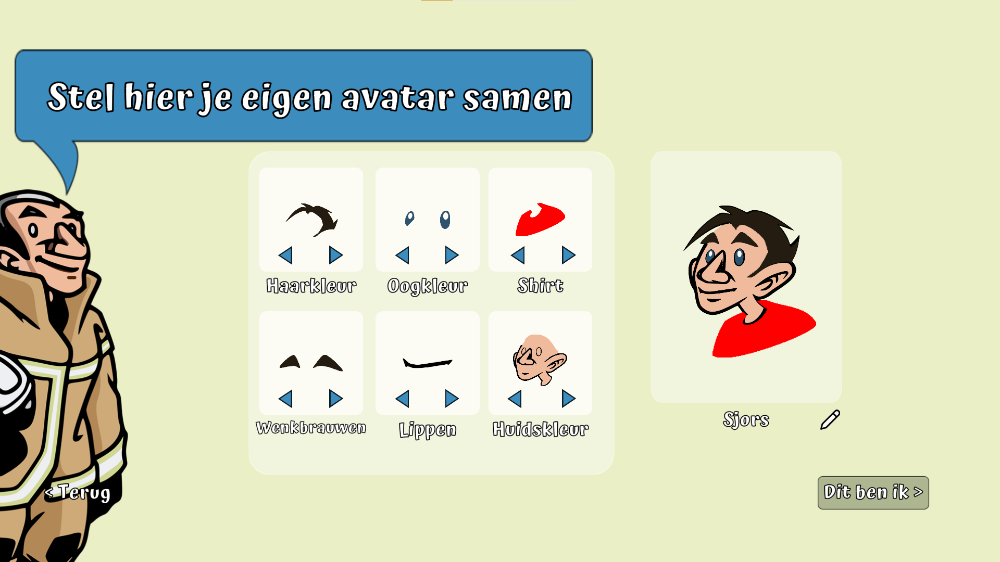
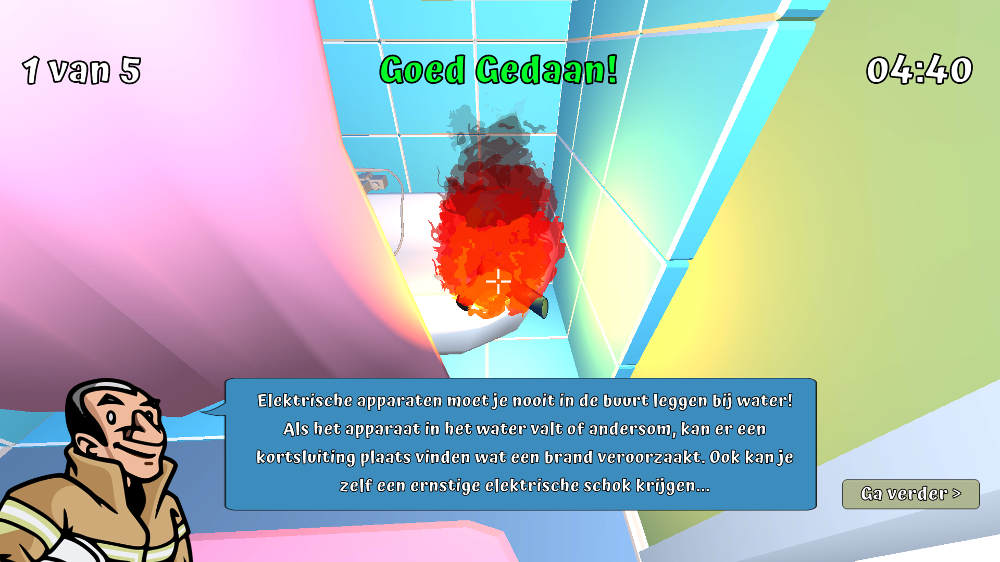
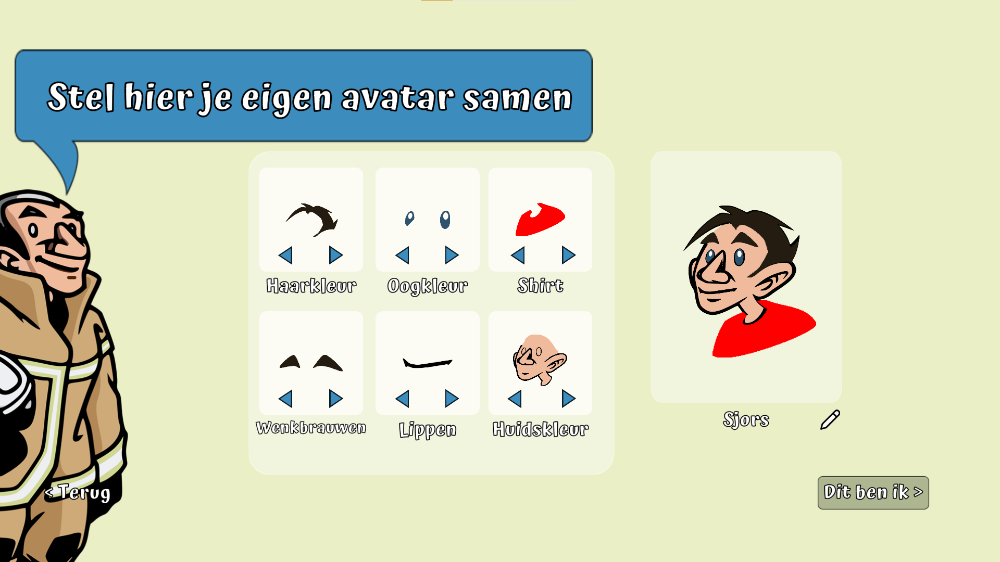
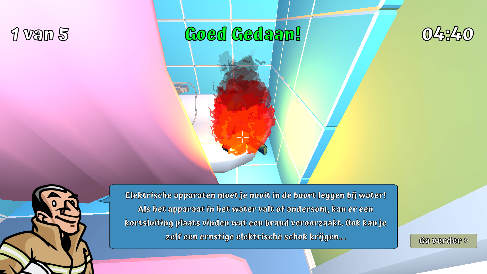

De Club van 1-1-2 Online
De Club van 1-1-2 Online is an educational 3D game developed for the Veiligheids Informatie Knooppunt project. The game is designed to engage children form grades 7 and 8 with fire safety awareness, teaching them important actions and procedures during emergency situations. Players explore a virtual house and complete interactive challenges that reinforce safety knowledge while supporting the real-life educational program at the fire station in Schiedam.
 



Project Context
During this project, our team, consisting of six students from the CMGT en CMD courses, was tasked with creating a solution to involve citizens in understanding emergency procedures. After research and brainstorming, we focused on De Club van 1-1-2 in Schiedam: a fire station teaching children about fire safety. Our team developed a 3D educational game that complements their program and helps children learn through interactive experiences.
My Role
I worked primarily in Unity 3D, developing the game mechanics and interactive systems. Additionaly, I conducted technical research to explore the most effective ways to implement our concept before fully building it in Unity. My work included prototyping, testing gameplay interactions, and ensuring that the game aligned with educational objectives.